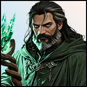

Player wiki noticeThis community-maintained page may contain gameplay, story, and mature-content spoilers.

概览
Sylwithe是 Sylwithe 洞穴的古老气象神灵在中世纪的乡村脱衣舞中,他现在的穿行覆盖着空洞的,普通的谈话, 暴风雨 教训和空心水晶店。
地点和可用性
- 从 低语森林选择 变暗路径: 5分钟.
- 从黑暗路径选择 Sylwithe的谷: 5分钟,与 所需付费版访问.
- 为 Talk 或课程选择 Sylwithe 的肖像。使用 位置菜单 用于购买水晶。
他来了 每一小时,每一天毫无爱意和日间情谊 离开 5分钟后返回黑暗路径, 回到伍兹 再花五分钟
| 细节 | 数值 |
|---|---|
| 年龄 | 古老 |
| 大纪元/对齐 | 中世纪/中立 |
| 地点 | Sylwithe的洞穴,村庄外裙 |
| 最喜欢的数据 | 无配置 |
| 特殊关系技能 | 无配置 |
| 最喜欢的礼物 | 无配置 |
谈话和感情
与 Sylwithe 交谈 带 15分钟,给出 1个真爱,并且已经 每天7种正用途。所有7个都花费105分钟,疲惫的每日计数器会导致负面的关系结果而不是另一个正面的用途,所以在下一场比赛日返回.
列出的关系奖励是基础值. 最喜欢的STAT在达到阈值时会增加奖金,特殊的关系技巧会在共享随机卷前将调整的基数增加一倍. 设备,buffs和对齐可以进一步改变最终的奖励. 提高爱心不会取代追求旗帜或更早的心跳.
Sylwithe 自己没有配置最喜爱的Stat或特殊技能的奖金。 更高的亲情会改变他的普通对话;他目前的服务不需要先建立浪漫舞台。
暴风雨打击课
在Sylwithe的肖像,选择 暴风雨 当你有了 神秘主义 60, 有偿使用,而不知道。陌生人已经足够了;不需要更高的感情阶段。
| 费用或奖励 | 现值 |
|---|---|
| 时间 | 350分钟(5小时50分钟) |
| 钱 | $10,000,000 |
| 晶体 | 5 |
| 能源/平静 | 180 能源和100 平静 |
| 技能 | 学习暴风雨 |
| 亲情 | 30个基地的教学计划完成 |
准备足够的流源资源和最大能量/魅力来支付成本。 课景首先运行,然后由操作者传授技能。它隐藏在之后。 配置的 30 不是一个额外的第二感恩奖 。
暴风雨改善 风暴;它不会产生单独的战斗行动。它会增加初始命中器的损伤。 5%带有整数调值应用 闪电弱点/抵抗 (x2或XQ2),可以在敌人活着时加入重复的连锁命中.
第一个继续的机会是 50%,以 每一次成功额外打击5个百分点。失败的续作结束链; Luck一旦通过共享续作帮助器就能够拯救失败的卷。 链击使用战斗处理器的基部打击和防御规则,所以其损坏不需要等同于初始闪电显示的命中。 学习暴风雨对应用该技能很有用, 但不是本课菜单的额外要求 。
该课没有配置 NPC 亲密或玩家 Erotic 体验奖励 。
水晶商店
这些是 地点菜单采购与肖像课分开他们有 没有爱之门,没有额外的时间成本,没有Sylwithe的爱之奖励.
| 购买 | 晶体价格 | 效果/限制 |
|---|---|---|
| 武器升级 | 10 | 当前melee武器级别+1,最高级别10 |
| 升级装甲 | 10 | 目前装甲等级+1,最高等级10 |
| 升级范围 | 10 | 当前武器级别+1,最高级别10 |
| 掌握指南 | 5 | 女佣物品:装备时+35%女佣经历;拥有时隐藏 |
| 经理徽章 | 5 | 附属物品: +5%的妓院财富和+3%的有效妓院名声,装备时;隐藏时拥有; |
| 神奇的哈普枪 | 10 | 独具特色的密钥项目:在爱情训练中,每个活跃的魅力工作都增加了一个幽灵素描. |
| 禅宗 禅宗 | 7 | 工人设备:每天减轻10和+1妓院工人的压力 |
设备升级是可重复的,直到它们各自的当前插槽达到第10级;完成一次采购并不能使整个服务一次性完成,它们使用游戏的设备级设置器,包括其匹配的项目名称. 最高级槽无法进一步升级.
哈普号没有在库存中添加一个实际可分配的 sylph, 和一个迷人的工作 零分配的 sylphs 仍然不活动。它改进了符合条件的活动魅力生产;它并没有在每件心脏工作上添加同样的幽灵。在添加新项目之前购买它更新生产,所以先前过时的生产不会被追溯性地提升。
向女仆提供指南或徽章,向工人提供便当,以获得其效果。独自拥有便当,不发放设备奖金。便当购买为工人设备提供额外的复制品;哈普是独一无二的。
建议的顺序和解决问题
- 穿过黑暗之路到达付薪的空洞
- 需要亲情时使用Talk,不要延迟购买不必要的关系门.
- 为您需要的确切设备槽或商业项目选择晶体服务; 装备购置的女佣/工人项目。
- 准备Mystic 60,5个晶体,1000,000美元,180个能量和100个平静度在最暴风雨的打击课之前
- 洞口无法进入 : 其旅行行动需要付费进入; 较早的黑暗道路是单独的免费进入步骤。
- 暴风雨没有了: 请检查istic 60, 付费访问, 是否已经学到了 。
- 我学会了,但没有新的攻击按钮: 它改变了暴风雪。
- 晶体升级停止 : 相应的设备槽已经达到10级.
- 指南或徽章没有改变 : 给女仆装上装备
- 哈普号没有给出更多可分配的yl: 它的幽灵是对积极魅力工作的生产奖金.
- 不再出现浪漫的内容: 当前 Sylwithe 的内容是 Talk、 课和晶体服务。没有配置个人日期、 心对心、 工人招聘或 NPC 亲密画廊资产 。
信用和当前范围
对照目前的旅行行动、肖像计划、课时和图案奖励、设备和水晶采购操作、女佣/工人的实际效果、爱情培训制作和战斗执行,保留现有的肖像和房屋风格。
相关页面
Overview
Sylwithe is the ancient weather deity at Sylwithe's Hollow, in the Medieval Village Outskirts. His current walkthrough covers reaching the hollow, ordinary Talk, the Tempest Strike lesson and the hollow's crystal shop.
Location and Availability
- From the Whispering Woods, choose Darkened Path: 5 minutes.
- From the Darkened Path, choose Sylwithe's Hollow: 5 minutes, with paid-version access required.
- Select Sylwithe's portrait for Talk or the lesson. Use the location menu for crystal purchases.
He is present all hours, every day, with no affection or day-parity gate. Leave returns to the Darkened Path in 5 minutes, and Return to Woods takes another 5 minutes.
| Detail | Value |
|---|---|
| Age | Ancient |
| Era / alignment | Medieval / Neutral |
| Location | Sylwithe's Hollow, Village Outskirts |
| Favorite stats | None configured |
| Special relationship skill | None configured |
| Favorite gift | None configured |
Talk and Affection
Talk to Sylwithe takes 15 minutes, gives 1 actual base affection, and has seven positive uses per day. All seven cost 105 minutes. The exhausted daily counter leads to a negative relationship result rather than another positive use, so return on the next game day.
Listed relationship rewards are base values. Favorite stats add bonuses when their thresholds are met, and the special relationship skill doubles the adjusted base before the shared random roll. Equipment, buffs and alignment can further change the final reward. Raising affection does not replace quest flags or earlier heart-to-hearts.
Sylwithe has no configured favorite-stat or special-skill bonus of his own. Higher affection changes his ordinary dialogue; his current services do not require building a romance stage first.
Tempest Strike Lesson
At Sylwithe's portrait, choose Tempest Strike when you have Mystic 60, paid access, and do not already know it. Stranger is sufficient; no higher affection stage is required.
| Cost or reward | Current value |
|---|---|
| Time | 350 minutes (5 hours 50 minutes) |
| Money | $10,000,000 |
| Crystals | 5 |
| Energy / Calm | 180 Energy and 100 Calm |
| Skill | Learn Tempest Strike |
| Affection | 30 base from the lesson plot's completion |
Prepare sufficient current resources and maximum Energy/Calm to pay the costs. The lesson scene runs first, then the handler teaches the skill. It hides afterward. The configured 30 is not an additional second affection award on top of the plot's 30.
Tempest Strike improves Stormslash; it does not create a separate combat action. It increases the initial hit's damage by 5% with integer truncation, applies Lightning weakness/resistance (×2 or ÷2), and can add repeated chain hits while the enemy remains alive.
The first continuation chance is 50%, declining by 5 percentage points per successful extra hit. A failed continuation ends the chain; Luck can rescue a failed roll once through the shared continuation helper. Chain hits use the combat handler's base-hit and defense rules, so their damage need not equal the initial lightning-boosted displayed hit. Learning Stormslash is useful to apply the skill, but is not an extra requirement on this lesson's menu.
The lesson configures no NPC intimacy or player Erotic experience reward.
Crystal Shop
These are location-menu purchases, separate from the portrait lesson. They have no affection gate, no extra time cost and no Sylwithe affection reward.
| Purchase | Crystal price | Effect / limit |
|---|---|---|
| Upgrade Weapon | 10 | Current melee weapon level +1, maximum level 10 |
| Upgrade Armor | 10 | Current armor level +1, maximum level 10 |
| Upgrade Ranged | 10 | Current ranged weapon level +1, maximum level 10 |
| Mastery Guidebook | 5 | Maid item: +35% maid Experience when equipped; hides while owned |
| Manager's Badge | 5 | Maid item: +5% brothel wealth and +3% effective brothel reputation when equipped; hides while owned |
| Enchanted Harp | 10 | Unique key item: one phantom sylph added to each active charm job in Love Training |
| Zen Pendant | 7 | Worker equipment: daily Stress reduction 10 and +1 brothel reputation from the equipped worker |
Equipment upgrades are repeatable until their respective current slot reaches level 10; completing one purchase does not make the whole service one-time. They use the game's equipment-level setter, including its matching item name. A maximum-level slot cannot be upgraded further.
The Harp does not add an actual assignable sylph to inventory, and a charm job with zero assigned sylphs remains inactive. It improves eligible active charm production; it does not add the same phantom to every heart job. Buying it updates production before the new item is added, so prior elapsed production is not retrospectively boosted.
Equip the Guidebook or Badge on a maid, and the Pendant on a worker, to receive their effects. Owning them alone does not apply the equipment bonuses. The Pendant purchase supports additional copies for worker equipment; the Harp is unique.
Recommended Order and Troubleshooting
- Reach the paid hollow through the Darkened Path.
- Use Talk when you want affection, without delaying purchases for an unnecessary relationship gate.
- Select crystal services for the exact equipment slot or business item you need; equip acquired maid/worker items.
- Prepare Mystic 60, 5 crystals, $10,000,000, 180 Energy and 100 Calm before the Tempest Strike lesson.
- The Hollow entrance is unavailable: its travel action requires paid access; the earlier Darkened Path is a separate free-access step.
- Tempest Strike is missing: check Mystic 60, paid access and whether it is already learned.
- I learned it but have no new attack button: it modifies Stormslash.
- A crystal upgrade stopped: the corresponding equipment slot is already level 10.
- Guidebook or Badge did not change anything: equip the item on a maid.
- The Harp did not give more assignable sylphs: its phantom is a production bonus on active charm jobs.
- No further romance content appears: current Sylwithe content is Talk, the lesson and crystal services. No personal date, heart-to-heart, worker recruitment or NPC intimacy gallery assets are configured.
Credits and Current Scope
Verified against current travel actions, portrait schedule, lesson handler and plot reward, equipment and crystal purchase handlers, actual maid/worker effects, Love Training production and combat implementation. The existing portrait and house style are preserved.
Related Pages
Text adapted from the community-maintained Chronoromancer Wiki under CC BY-SA 4.0.